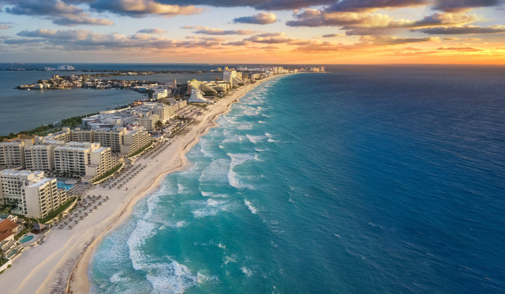
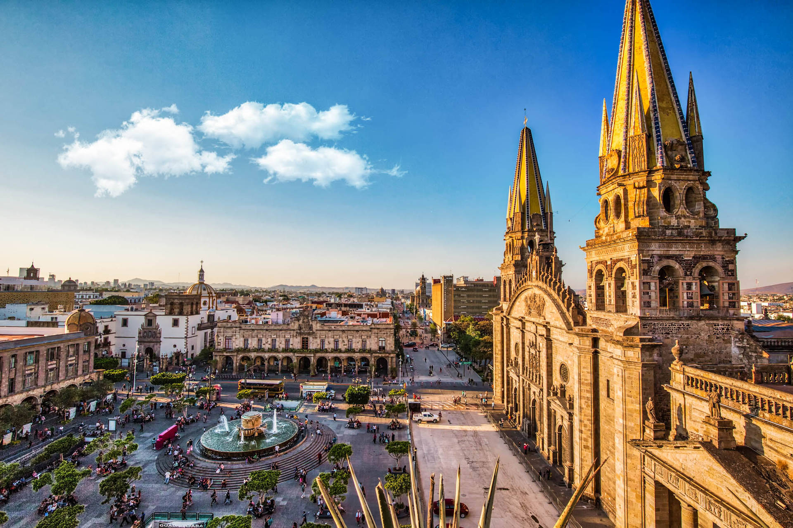
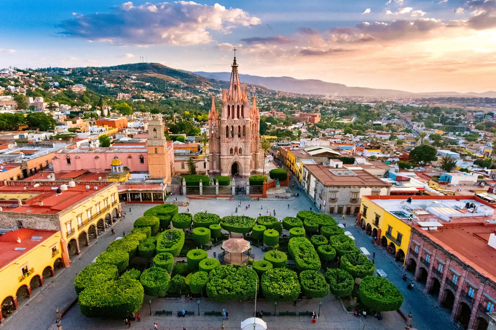

Ciudades y Lugares de Interés en México
México es un país lleno de belleza y cultura. Algunos de los lugares turísticos más destacados incluyen:
-
Ciudad de México

La capital de México es una ciudad vibrante llena de historia y cultura.
-
Cancún y la Riviera Maya
Las hermosas playas y la vida nocturna hacen de Cancún un destino popular.
-
Chichén Itzá

Este sitio arqueológico maya es famoso por su pirámide.
-
Guadalajara
La "Perla Tapatía" es conocida por su música, tequila y arquitectura.
-
San Miguel de Allende
Un encantador pueblo colonial con calles empedradas y arquitectura colorida.